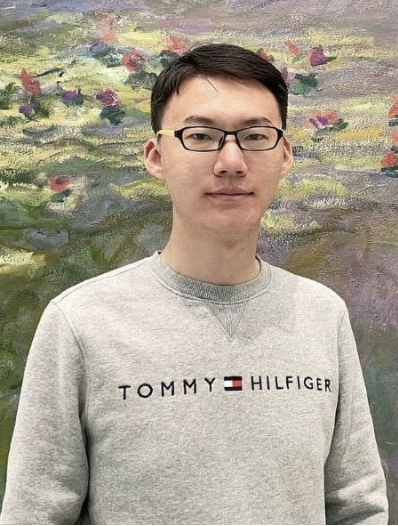

Jiangshan Shawn Bai
Chromatin architecture · Gene regulation · Computational genomics
PhD student @ Computational and Systems Biology, MIT
Calligraphy Enthusiast
Saxophone Beginner, photography lover
Email: jsbai[at]mit.edu (remove [] and replace at with @)

My Journey
I studied biology at Lanzhou University, in the Cuiying Honors College, and spent two semesters as an exchange student at UC Berkeley and a summer at Peking University. Berkeley is where my interests changed shape. Until then I had thought of biology as something you observe; there I encountered it as something you could quantify, model, and predict. I started teaching myself programming and statistics on the side. My first real project came in my senoir year: tracing the evolutionary trajectory of the PINOID kinase family across plant lineages (Gene, 2022). It taught me Linux and Python, and it was my first time taking a manuscript through peer review. I then joined the Institute of Biophysics at the Chinese Academy of Sciences as a "Future Star" research assistant, where I worked with a graduate student on strand-specific G-quadruplex profiling and took on the computational side of the project (Nature Communications, 2025). At the Broad Institute, in Bo Xia's lab, I contributed to several projects across quite different problems — the genetic basis of tail loss in apes (Nature, 2024) and single-cell analysis for a pig-to-human kidney xenotransplant study (Med, 2024). My own project was in three-dimensional genome organization: we used deep learning to screen in silico for proteins that shape chromatin architecture, and then went to the bench to test them. Two novel regulators：JMJD6 and ZNF654 were neither previously known as an architectural regulator (Biorxiv, 2026). Building that project from prediction to validation is where I learned ChIP-seq, Hi-C and Micro-C alongside the computational methods, and more importantly where I learned how to hold an idea and the evidence against it at the same time. I am now a PhD student in Computational and Systems Biology at MIT. I want to go deeper into quantitative and statistical biology, and to turn that toward gene regulation — not only reading regulatory logic out of the genome, but designing new regulatory circuits with it, with an eye toward therapeutics.
Academic Interests
My research focuses on gene regulation networks, 3D genome organization. I am also interested in deep learning and synthetic biology, like how we can engineer new cell fate for therapetics.
Beyond Science
Outside the lab, I am a passionate calligrapher, particularly fascinated by the works of Wang Xizhi(王羲之) and Mi Fu(米芾).
I also enjoy playing the alto saxophone🎷 and exploring cross-disciplinary intersections between art and science.
At My Core
I have a deep appreciation for both structured logic and artistic expression, which reflects in both my research and hobbies. I also enjoy engaging conversations.
I like scientific arguments — the kind about ideas, never about people. Some of the best afternoons I've had in lab were the ones where someone told me my interpretation was wrong and turned out to be right. I think disagreement is how a question gets clearer.
Last update: 09/2026